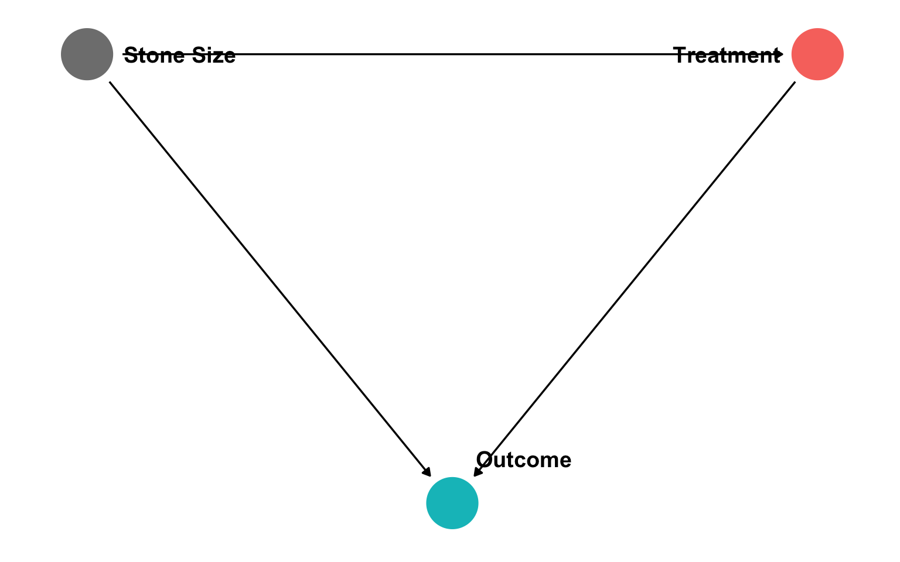

About Me

Ph.D (Economics) — George Mason University, 2015
B.A. (Economics) — University of Connecticut, 2011
7th year teaching at Hood
Specializations:
- Law and Economics
- Austrian Economics
Research interests
- modeling innovation & economic growth
- political economy & economic history of intellectual property
What’s Keeping Me Busy

Simpson’s Paradox

We’re Not so Good at Statistics: Smoking
1964: U.S. Surgeon General issued a report claiming that cigarette smoking causes lung cancer
Evidence based primarily on correlations between cigarette smoking and lung cancer

We’re Not so Good at Statistics: Smoking

Ronald A. Fisher
1890—1924
- But so did R. A. Fisher, the “father of modern statistics”
Correlation Does Not Imply Causation
- The goal of every intro statistics class ever

Correlation Does Not Imply Causation

Correlation Does Not Imply Causation…
It’s always good to be skeptical of causal claims
But this is actually where econometrics shines

Econometrics
Econometrics is the application of statistical tools to quantify economic relationships in the real world
Uses real data to
- test economic hypotheses
- quantitatively estimate the magnitude of relationships between economic variables
- forecast future events

Econometrics and Causal Inference
What sets econometrics apart from mere statistics (or uses of statistics in other disciplines) is its role in causal inference
We can, with proper tools and interprations, make quantitative causal claims
- about the effects of individual choices
- about the effects of policy interventions
- about the impact of political institutions
- about economic history and economic development
- etc…
Causal Inference: Examples
A 50% increase in police presence in a metropolitan area lowers crime rates by 15%, on average1
Being an incumbent in office raises the probability of re-election by 40-45 percentage points2
European cities with at least one printing press in 1500 were at least 29% more likely to become Protestant by 16003
Example 1: Education
- A policy-relevant tradeoff with a budget constraint
- What is the precise effect of class size on performance?
- Is it worth hiring new teachers and building more schools over?

Example 2: Discrimination in Lending
- Boston Fed: 28% of African-Americans are denied mortgages compared to only 9% of White Americans
- Is this due to factors such as credit history, income, or discrimination purely because of race?

Example 3: Public Health and Public Finance
- Econ 101: raise price \(\rightarrow\) lower quantity consumed
- What is the price elasticity of demand for smoking?
- How much tax revenue will this generate?
- Probably: \(Taxes \rightarrow Smokers\)
- Maybe?: \(Taxes \leftarrow Smokers\)
Real Talk: The Math

Real Talk: The Math

Real Talk: Difficulty
- This will be one of the hardest courses you take at Hood
- There will be moments where you have no idea WTF is going on 🤯 (this is normal)
- But this is one of the best courses you can take at Hood
- Yes, you can still get an A

What You’ll Get Out of This Class
By the end of this semester, you will:
- understand how to evaluate statistical and empirical claims;
- use the fundamental models of causal inference and research design;
- gather, analyze, and communicate with real data in R.

Building Industry-Demanded Data Science Skills
Data Scientist (n.): Person who is better at statistics than any software engineer and better at software engineering than any statistician.
— Josh Wills (@josh_wills) May 3, 2012

Causal Inference — Economists’ Comparative Advantage
- Machine learning and artificial intelligence are “dumb”1
- With the right models and research designs, we can say “X causes Y” and quantify it!
- Economists are in a unique position to make causal claims that mere statistics cannot

Causal Inference — Economists’ Comparative Advantage

“[T]he field of economics has spent decades developing a toolkit aimed at investigating empirical relationships, focusing on techniques to help understand which correlations speak to a causal relationship and which do not. This comes up all the time — does Uber Express Pool grow the full Uber user base, or simply draw in users from other Uber products? Should eBay advertise on Google, or does this simply syphon off people who would have come through organic search anyway? Are African-American Airbnb users rejected on the basis of their race? These are just a few of the countless questions that tech companies are grappling with, investing heavily in understanding the extent of a causal relationship.”
Building Good Workflow Habits
- I will show you the tools to make your workflow:
- Reproducible
- Computer- and Human-Readable (!)
- Automated
- All in one program

For Example

library(gapminder)
library(gganimate)
gapminder %>%
filter(continent != "Oceania") %>%
ggplot(aes(x = gdpPercap,
y = lifeExp,
color = country,
size = pop))+
geom_point(alpha=0.3)+
scale_x_log10(breaks=c(1000,10000, 100000),
label=scales::dollar)+
scale_size(range = c(0.5, 12)) +
scale_color_manual(values = gapminder::country_colors) +
labs(x = "GDP/Capita",
y = "Life Expectancy (Years)",
caption = "Source: Hans Rosling's gapminder.org",
title = "Income & Life Expectancy - {frame_time}")+
facet_wrap(~continent)+
guides(color = F, size = F)+
theme_minimal(base_family = "Fira Sans Condensed")+
transition_time(year)+
ease_aes("linear")Logistics
Office hours: MW 1:30-2:30 PM & by appt
- Office: 114 Rosenstock
Slack channel
See the resources page for tips for success and more helpful resources

Your Textbooks


Tips for Success in This Course
Take notes. On paper. Really.
Work together on assignments and study together.
Ask questions, come to office hours. Don’t struggle in silence, you are not alone!
The biggest skill you are developing is learning how to learn1
See the reference page for more
For Next Class
Register for R Studio Cloud
(Optional but highly recommended) Install R and R Studio on your computer